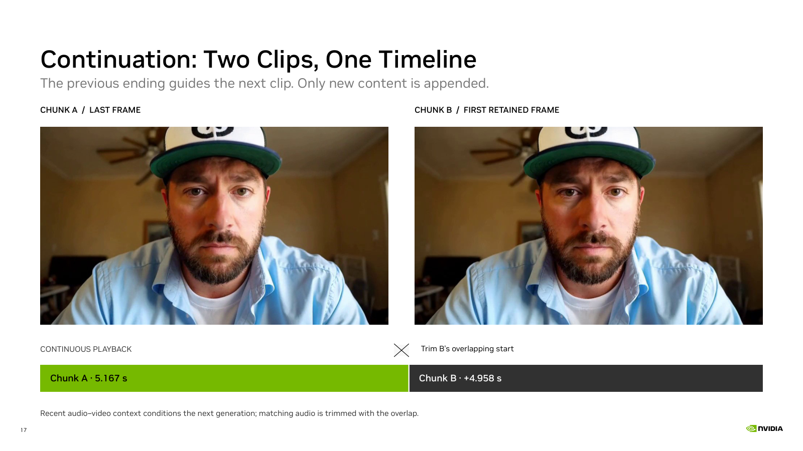

Online continuation slide · Interaction pipeline and full settings · Recorded demo

The images show the last frame of Chunk A and the first retained frame of Chunk B from two consecutive demo requests. The second image is already overlap-trimmed. Frame provenance
The first window contributes 5.167 seconds. Each continuation adds 4.958 seconds at 24 FPS. Window starts advance by 119 frames; cumulative audio–video positions continue across requests.
Recorded demo settings: the video guide mixes 80% history with 20% seeded noise; audio history stays clean; target prefix clamping is off. This guides continuity without fixing the generated prefix to an exact copy. It is not a lossless transformation or a guarantee against long-term drift.
This page explains the existing implementation; it reports no new benchmark. The ASR / LLM / H3 interaction pipeline is on slide 16 and the recorded conversation is on slide 18.